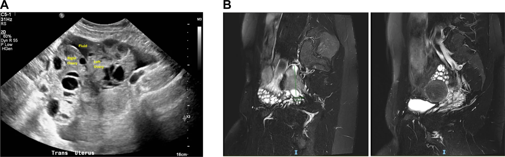
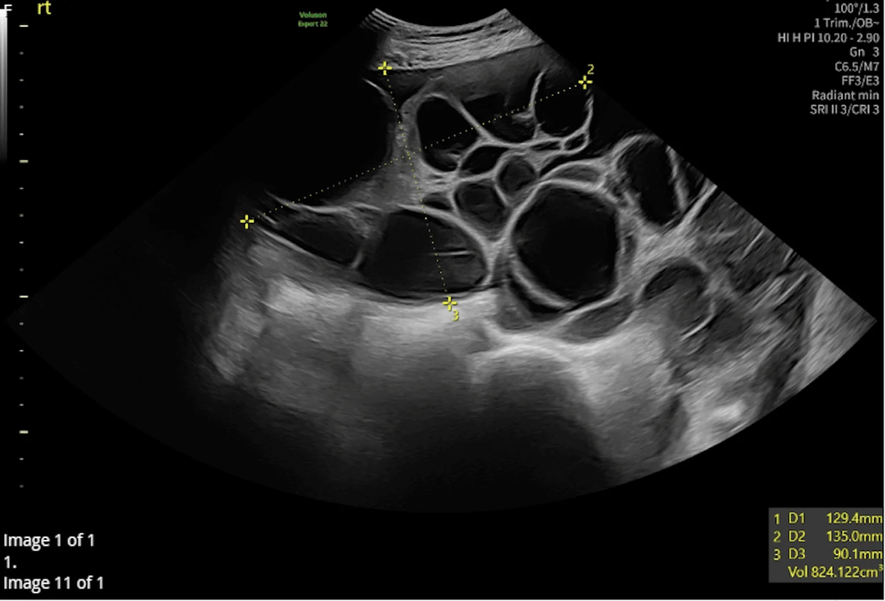
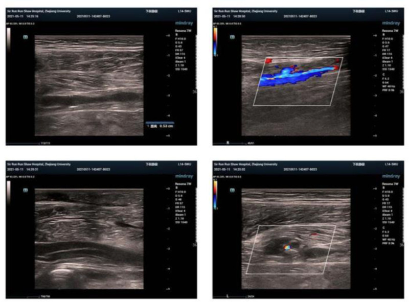

1669 — Hội chứng quá kích buồng trứng: buồng trứng đa nang hai bên + cổ trướng sau kích thích rụng trứng / Ovarian hyperstimulation syndrome (OHSS)
Tags: pattern:buong-trung-da-nang pattern:dich-o-bung pattern:co-trung vung:buong-trung vung:phan-phu vung:phoi protocol:TVUS protocol:CT-bung protocol:MRI-bung score:ASRM
Mức chắc chắn (certainty): tổng hợp y văn (literature synthesis) — ghép 2 tổng quan về sinh lý bệnh/phân độ và dự phòng (Iran J Med Sci 2018, PMC5993897, CC BY-NC-SA 3.0; Reprod Biol Endocrinol 2023, PMC10360244, CC BY 4.0), 2 tổng quan dịch tễ – huyết khối (Adv Ther 2020, PMC7595967, CC BY-NC 4.0; J Clin Med 2025, PMC11856335, CC BY 4.0), 1 phân tích gộp mô hình dự báo (BMC Pregnancy Childbirth 2025, PMC12363076, CC BY-NC-ND 4.0) và 3 ca nguyên văn có ảnh (PMC13631586, PMC13643111, PMC12262994). Không có thử nghiệm ngẫu nhiên nào về ngưỡng chụp CT/MRI trong OHSS → phần "chỉ định hình ảnh" là tổng hợp thực hành, không phải khuyến cáo hạng A.
Câu chốt: OHSS không phải "buồng trứng to đơn thuần" mà là bệnh toàn thân do VEGF làm tăng tính thấm mao mạch: huyết tương thoát ra khoang thứ ba → cô đặc máu, cổ trướng, tràn dịch màng phổi, thiểu niệu và huyết khối. Trên hình ảnh, chốt chẩn đoán là hai buồng trứng to, nhiều nang mỏng thành, không có thành phần đặc bắt thuốc + dịch ổ bụng, đặt trong bối cảnh có kích thích rụng trứng hoặc có thai. Con số quyết định xử trí không phải kích thước nang mà là hematocrit > 45%, bạch cầu > 15.000/mm³, creatinin > 1,1 mg/dL và nước tiểu < 30 mL/giờ.
1. Tổng quan bệnh học – cơ chế hình ảnh
1.1 Vì sao buồng trứng to và dịch lại đi vào khoang thứ ba
- Trục chính: hCG (hoặc đồng vận GnRH) kích thích tế bào hạt (granulosa) tiết VEGF → VEGF gắn VEGFR-2 trên tế bào nội mô mao mạch buồng trứng và phúc mạc → tăng tính thấm → protein và dịch thoát vào khoang phúc mạc, màng phổi, màng tim. Nồng độ VEGF tương quan với độ nặng OHSS (PMC5993897).
- Vì sao buồng trứng to: nhiều nang noãn cùng phát triển + phù mô đệm (stromal edema) do rò dịch mao mạch trong vỏ buồng trứng. Thể tích buồng trứng có thể > 800 mL (ca sOHSS: 824 mL bên phải, 429 mL bên trái — PMC13643111), so với thể tích sinh lý 5–15 mL ở người trưởng thành.
- Vì sao cô đặc máu: dịch thoát giàu protein → albumin máu giảm, hematocrit tăng dù không mất máu; ca CKD: hemoglobin 10,5 → 12,5 g/dL, creatinin 3,1 mg/dL so với nền 2,5–2,7 mg/dL (PMC13631586). Đây là cô đặc máu giả (hemoconcentration), không phải đa hồng cầu thật.
- Vì sao có huyết khối: cô đặc máu + tăng yếu tố đông máu + bất động + buồng trứng to chèn ép tĩnh mạch chậu → huyết khối tĩnh mạch sâu, tĩnh mạch cảnh/tay, xoang hang, thuyên tắc phổi. VTE thường xuất hiện trung bình 26,6 ngày sau hCG, còn huyết khối động mạch sớm hơn, trung bình 13,7 ngày (PMC11856335).
- Khởi phát sớm – muộn: thể sớm 4–10 ngày sau trigger, do hCG ngoại sinh; thể muộn từ ngày 9 trở đi, do hCG nội sinh từ thai (PMC13631586). Thể muộn kéo dài hơn và thường nặng hơn vì nguồn hCG vẫn tiếp tục.
1.2 Ngưỡng định lượng nằm lòng
| Đại lượng | Số liệu | Nguồn |
|---|---|---|
| OHSS nhẹ | 20–33% các chu kỳ hỗ trợ sinh sản | tổng quan 27 tổng quan/85.497 ca, dẫn trong PMC12363076 |
| OHSS trung bình – nặng | 3–8% chu kỳ IVF; 1–5% chu kỳ IVF nói chung; tới 20% ở nhóm nguy cơ cao | PMC12363076; PMC10360244 |
| OHSS nặng | 0,19% (191/100.000 chu kỳ) với follitropin alfa; toàn bộ OHSS 5,19% | PMC7595967 |
| Nhập viện vì OHSS (Mỹ 2002–2011) | 11.562 ca; 4,4% trong số đó đe dọa tính mạng | PMC10360244 |
| Kích thước buồng trứng theo độ | nhẹ ≤ 8 cm; trung bình ≤ 12 cm; nặng > 12 × 12 cm | PMC5993897 |
| Hematocrit | nặng > 45%; nguy kịch > 55% | PMC5993897 |
| Bạch cầu | nặng > 15.000/mm³; nguy kịch > 25.000/mm³ | PMC5993897 |
| Creatinin | nặng 1,1–1,5 mg/dL; nguy kịch ≥ 1,6 mg/dL hoặc độ thanh thải < 50 mL/phút | PMC5993897 |
| Điện giải | K⁺ > 5,0 mmol/L, Na⁺ < 135 mmol/L, áp lực thẩm thấu < 282 mOsm/kg | PMC5993897 |
| Albumin | < 35 g/L (giảm protein máu) | PMC5993897 |
| Nước tiểu | thiểu niệu < 300 mL/ngày hoặc < 30 mL/giờ | PMC5993897 |
| Nguy cơ trước chu kỳ | AMH ≥ 3,4 ng/mL (Se 90,5%/Sp 81,3% ở cut-off 3,36 ng/mL); AFC ≥ 24; > 17 nang > 10 mm | PMC13631586; PMC5993897 |
| Nguy cơ trong chu kỳ | estradiol > 3.500 pg/mL ngày trigger; thu > 15–20 noãn | PMC13631586 |
| Huyết khối sau IVF | VTE 0,1–0,5% chu kỳ; OHSS làm tăng nguy cơ tuyệt đối ~2%; VTE trung bình 26,6 ngày sau hCG | PMC11856335 |
2. Mẫu hình + chẩn đoán phân biệt theo vị trí (gamut)

(A) Siêu âm ngang 1 ngày sau chọc hút: hai buồng trứng to, nhiều nang mỏng thành, dịch quanh buồng trứng. (B) MRI T2 coronal 4 tháng sau: buồng trứng vẫn to, nhiều nang tín hiệu cao; OHSS kéo dài ở bệnh nhân suy thận mạn. Nguồn: Kidney Med 2026, PMC13631586, CC BY-NC-ND 4.0 — nguyên bản.- Mẫu hình chốt: hai buồng trứng to đối xứng (thường > 8 cm), cấu trúc nhiều nang mỏng thành (< 3 mm), không có thành phần đặc/ nhú bắt thuốc + dịch ổ bụng**; kèm tràn dịch màng phổi **phải > trái và có thể tràn dịch màng tim.
- Gamut theo bối cảnh (quan trọng hơn gamut theo hình thái):
- Có kích thích rụng trứng + sau chọc hút 4–10 ngày: OHSS sớm (hCG ngoại sinh).
- Có thai sau chuyển phôi, khởi phát ≥ 9 ngày: OHSS muộn (hCG nội sinh) — kéo dài, dễ tái phát.
- Không dùng thuốc, có thai hoặc TSH cao: OHSS tự phát (spontaneous OHSS, sOHSS) do đột biến hoạt hóa FSHR hoặc phản ứng chéo với hCG/TSH; rất hiếm nhưng bắt chước ung thư buồng trứng (PMC13643111).
- Có thai + hCG rất cao (thai trứng, đa thai): hyperreactio luteinalis — nang hoàng thể hóa hai bên, thường không có cô đặc máu.
- Gamut theo hình thái:
- Hai bên, nhiều nang đơn thuần, vách mỏng: OHSS, sOHSS, hyperreactio luteinalis, PCOS (nhưng PCOS nang 2–9 mm, không cổ trướng).
- Một bên, thành phần đặc/nhú, vách dày > 3 mm, cổ trướng: u biểu mô buồng trứng (mucinous/serous), di căn, u tế bào hạt.
- Một bên, xoắn cuống, đau cấp, Doppler bất thường: xoắn buồng trứng — biến chứng của chính OHSS.
- Buồng trứng to + đau bụng + tụt hematocrit: vỡ nang/xuất huyết trong ổ bụng.
3. Bảng so sánh phân biệt (ma trận đối chiếu)
| Thực thể (entity) | Hình ảnh điển hình (US/CT/MRI) | Chốt vào (rule-in) | Chốt loại (rule-out) | Gợi ý xác nhận |
|---|---|---|---|---|
| OHSS do kích thích rụng trứng | Hai buồng trứng to > 8 cm, nhiều nang mỏng thành, dịch quanh buồng trứng, cổ trướng; CT: dịch 0–20 HU, không thành phần đặc; MRI: nang T1 thấp – T2 cao | Tiền sử kích thích rụng trứng/chọc hút + hai buồng trứng đa nang + cổ trướng + cô đặc máu | Có nhú đặc bắt thuốc, vách dày > 3 mm, một bên → nghĩ u | US đầu tay; CT/MRI khi biến chứng hoặc nghi u |
| OHSS tự phát (sOHSS) | Giống OHSS nhưng không có tiền sử thuốc; thường trong thai kỳ; CA-125 có thể rất cao | Có thai + hai buồng trứng đa nang + cổ trướng, không dùng gonadotropin; tiền sử gia đình | Có khối đặc/ nhú, hoặc bệnh tiến triển sau 16–20 tuần → nghi u | TSH, β-hCG, siêu âm thai; theo dõi thể tích buồng trứng |
| Hyperreactio luteinalis | Hai buồng trứng to nhiều nang hoàng thể hóa, thường không dịch ổ bụng nhiều, hCG rất cao | Thai trứng/đa thai + hCG rất cao + nang hai bên | Cô đặc máu, cổ trướng lượng nhiều → nghi OHSS | β-hCG, siêu âm tử cung, theo dõi sau xử trí nguyên nhân |
| U biểu mô buồng trứng (mucinous/borderline) | Khối một bên, nhiều vách dày, thành phần đặc/nhú, có thể cổ trướng; CT có thành phần ngấm thuốc | Thành phần đặc bắt thuốc + vách > 3 mm + một bên | Hai bên, nang mỏng đều, không thành phần đặc → nghĩ OHSS | MRI có/không cản từ; CA-125; phẫu thuật khi nghi ác |
| PCOS | Hai buồng trứng to nhẹ, 12–20 nang nhỏ 2–9 mm xếp ngoại vi, không dịch ổ bụng | Nang nhỏ đều + không cổ trướng + rối loạn phóng noãn | Nang lớn > 10 mm, dịch ổ bụng, cô đặc máu → OHSS | Testosterone, LH/FSH, siêu âm |
| Xoắn buồng trứng | Buồng trứng to, một bên, đau cấp; Doppler: mất dòng tĩnh mạch trước, sau đó mất dòng động mạch; có thể phù xuất huyết | Đau cấp một bên + mất tín hiệu Doppler + cuống xoắn | Hai bên, không đau, Doppler bình thường → không xoắn | Siêu âm Doppler khẩn; mổ nội soi khi nghi |
| Huyết khối tĩnh mạch sâu (DVT) | Tĩnh mạch không xẹp được, khuyết thuốc trong lòng, tăng hồi âm; Doppler: mất biến thiên theo nhịp thở | Buồng trứng to + đau/sưng chi + khuyết thuốc trong tĩnh mạch | Tĩnh mạch xẹp hoàn toàn, dòng chảy bình thường → loại DVT | Siêu âm Doppler chi; CTV/CTV bụng khi nghi huyết khối chậu |
- Ảnh minh họa mẫu hình: ca sOHSS có buồng trứng phải 824 mL kèm cổ trướng, sau đó giảm dần còn 623 mL ở 15 tuần và 132 × 55 × 51 mm ở 20 tuần (PMC13643111) — theo dõi thể tích bằng siêu âm là cách đánh giá đáp ứng điều trị, không cần chụp lại CT.

Siêu âm đầu dò âm đạo: buồng trứng phải nhiều nang, thể tích đo được 824,122 mL, dịch quanh buồng trứng. Nguồn: Cureus 2026, PMC13643111, CC BY 4.0 — nguyên bản.4. Protocol chụp + hệ phân độ/điểm chuẩn hóa
4.1 Chọn kỹ thuật theo câu hỏi lâm sàng
- Siêu âm là đầu tay, luôn luôn. Với buồng trứng > 10–12 cm, dùng đầu dò bụng (transabdominal) với bàng quang đầy để đo toàn bộ buồng trứng; đầu dò âm đạo chỉ để đánh giá nang nhỏ và Doppler khi buồng trứng còn vừa. Đo 3 chiều và tính thể tích V = 0,523 × D1 × D2 × D3; ghi rõ thể tích (mL) thay vì chỉ "to".
- Doppler: đánh giá xoắn cuống (mất dòng tĩnh mạch sớm hơn động mạch) và huyết khối tĩnh mạch chậu; không dùng Doppler để chẩn đoán OHSS.
- CT bụng–chậu có cản quang thì tĩnh mạch cửa khi: nghi vỡ/xuất huyết, huyết khối tĩnh mạch chậu, tắc ruột, thủng tạng, hoặc cần loại u khi siêu âm không kết luận. Dịch OHSS có tỷ trọng 0–20 HU; thành phần đặc ngấm thuốc là dấu hiệu chống lại OHSS.
- CTA/CTPA khi nghi thuyên tắc phổi hoặc huyết khối động mạch; CTV khi nghi huyết khối tĩnh mạch chậu.
- MRI bụng–chậu không cản từ là lựa chọn khi suy thận, có thai, dị ứng iod, hoặc cần theo dõi buồng trứng kéo dài: nang OHSS T1 thấp, T2 rất cao, không có thành phần đặc; mô đệm phù T2 cao. Ca CKD cho thấy MRI vẫn phát hiện buồng trứng to 4 tháng sau chọc hút (PMC13631586).
- Tránh cản quang iod ở bệnh nhân creatinin tăng/thiểu niệu nếu không thật cần: ưu tiên siêu âm/MRI, và nếu buộc phải CT thì dùng liều thấp, đủ nước, theo dõi creatinin sau 48–72 giờ.
4.2 Phân độ ASRM/OHSS và ngưỡng xử trí
| Độ | Tiêu chuẩn | Nơi xử trí |
|---|---|---|
| Nhẹ | Buồng trứng ≤ 8 cm, chướng bụng, đau nhẹ | Ngoại trú, theo dõi cân nặng/nước tiểu |
| Trung bình | Buồng trứng ≤ 12 cm, nôn/tiêu chảy, có dịch ổ bụng trên siêu âm, tăng cân > 3 kg | Ngoại trú sát hoặc nhập viện theo triệu chứng |
| Nặng | Buồng trứng > 12 cm, cổ trướng lâm sàng ± tràn dịch màng phổi, Hct > 45%, WBC > 15.000, K⁺ > 5,0, Na⁺ < 135, albumin < 35 g/L, thiểu niệu | Nhập viện, bù dịch tinh thể, chọc dịch ổ bụng khi chèn ép |
| Nguy kịch | Cổ trướng/tràn dịch nặng, Hct > 55%, WBC > 25.000, vô niệu, creatinin ≥ 1,6 mg/dL, huyết khối, ARDS | Hồi sức tích cực, lọc máu/chọc dẫn lưu, xử trí huyết khối |
flowchart TD
A[Buồng trứng to hai bên + cổ trướng sau kích thích rụng trứng] --> B{Đau bụng cấp một bên + Doppler bất thường?}
B -->|Có| C[Xoắn buồng trứng — mổ nội soi khẩn]
B -->|Không| D{Đo Hct, WBC, creatinin, điện giải, nước tiểu}
D --> E{Hct > 45% hoặc creatinin > 1,1 hoặc thiểu niệu?}
E -->|Không| F[OHSS nhẹ–trung bình: ngoại trú, uống nước, theo dõi 48–72 giờ]
E -->|Có| G[OHSS nặng: nhập viện, bù dịch tinh thể, cân nhắc chọc dịch ổ bụng]
G --> H{Có đau/sưng chi, khó thở, đau ngực?}
H -->|Có| I[Siêu âm Doppler chi + CTPA/CTV: tìm huyết khối]
H -->|Không| J[Theo dõi Hct/WBC/creatinin mỗi 24–48 giờ]
I --> K[Huyết khối: kháng đông LMWH, hội chẩn đa chuyên khoa]
4.3 Dự phòng và điều trị có số liệu
- Dự phòng: GnRH antagonist (OR 0,61, KTC 0,51–0,72; 36 RCT/7.944 ca), GnRH agonist trigger (OR 0,15, KTC 0,05–0,47; 8 RCT/989 ca), đông lạnh toàn bộ phôi, đồng vận dopamine (cabergoline 0,5 mg/ngày × 8 ngày) (OR 0,32, KTC 0,23–0,44; 10 RCT/1.202 ca), kích thích nhẹ (RR 0,26, KTC 0,14–0,49) (PMC10360244). GnRH agonist trigger không loại trừ hoàn toàn OHSS — vẫn có ca nặng sau trigger đơn thuần (PMC11485447).
- Điều trị: bù dịch tinh thể (không dùng albumin thường quy), chọc dịch ổ bụng qua ngả âm đạo khi cổ trướng chèn ép/hô hấp, dẫn lưu màng phổi khi tràn dịch gây suy hô hấp, kháng đông dự phòng ở thể nặng/nhập viện (LMWH), không mổ trừ khi xoắn/vỡ.
- Theo dõi tại nhà: cân nặng mỗi ngày, vòng bụng, lượng nước tiểu, Hct/creatinin mỗi 48–72 giờ; nhập viện ngay khi tăng cân > 1 kg/ngày, nước tiểu < 500 mL/ngày, khó thở hoặc đau ngực.
5. Biến thể bình thường và cạm bẫy
- CA-125 cao + cổ trướng không đồng nghĩa ung thư. Trong sOHSS, CA-125 có thể tăng rất cao và hình ảnh giống u buồng trứng; hai bên + nang mỏng + không thành phần đặc + có thai là chốt loại u. Can thiệp mổ không cần thiết có thể làm mất thai (PMC13643111).
- PCOS không phải OHSS: PCOS có 12–20 nang nhỏ 2–9 mm, không cổ trướng, không cô đặc máu; đừng gọi "buồng trứng đa nang" là OHSS nếu không có dịch và bối cảnh kích thích.
- Xoắn cuống có thể có Doppler bình thường (xoắn ngắt quãng) — đau cấp một bên + buồng trứng to là đủ để mổ nội soi, không chờ Doppler "dương tính".
- OHSS muộn sau khi β-hCG dương tính: khởi phát ≥ 9 ngày sau trigger, kéo dài vì hCG thai; đừng nhầm là "nhiễm trùng sau chọc hút".
- Cạm bẫy đo thể tích: đo một nang to nhất sẽ đánh giá thấp mức độ; phải đo toàn bộ buồng trứng theo 3 chiều, nhất là khi buồng trứng > 10 cm.
- Tràn dịch màng phổi phải nhiều hơn trái là mẫu hình kinh điển; tràn dịch lượng nhiều gây suy hô hấp cần dẫn lưu, nhưng không rút quá nhanh vì nguy cơ phù phổi tái giãn.
- Suy thận + cản quang: creatinin tăng sau CT có thể do cả OHSS và thuốc cản quang; ưu tiên siêu âm/MRI, theo dõi creatinin 48–72 giờ sau CT.
- Không bỏ sót huyết khối: đau/sưng chi, đau ngực, khó thở, đau đầu bất thường ở người OHSS nặng → siêu âm Doppler/CTPA/CTV ngay, kể cả khi không có yếu tố nguy cơ kinh điển.
6. Tự lượng giá — Blind Quiz
Ca 1 — Nữ 28 tuổi, suy thận mạn độ 4, IVF; 1 ngày sau chọc hút đau bụng, tăng cân, thiểu niệu.
- Gợi ý: estradiol đỉnh 5.767 pg/mL; creatinin 3,1 mg/dL (nền 2,5–2,7); Hb 10,5 → 12,5 g/dL.
- Câu hỏi: Mô tả bất thường trên siêu âm? Vì sao Hb tăng dù không mất máu? Vì sao MRI vẫn còn bất thường sau 4 tháng?
Bấm để hiện đáp án (findings + chẩn đoán)
- Findings: hai buồng trứng to, nhiều nang mỏng thành, dịch quanh buồng trứng; MRI T2 coronal 4 tháng sau vẫn thấy buồng trứng nhiều nang tín hiệu cao.
- Chẩn đoán: OHSS sớm mức trung bình–nặng, biến chứng suy thận cấp và tăng kali trên nền CKD 4. Hb tăng do cô đặc máu (dịch thoát vào khoang thứ ba), không phải mất máu. MRI còn bất thường vì OHSS có thể kéo dài nhiều tháng, nhất là khi có bệnh thận nền.
- Nguồn ảnh: Kidney Med 2026, PMC13631586, CC BY-NC-ND 4.0.
Ca 2 — Nữ 30 tuổi, thai 11 tuần, không dùng thuốc sinh sản, đau bụng + bụng to; CA-125 tăng.
- Câu hỏi: Chẩn đoán? Hai chẩn đoán phân biệt nguy hiểm nhất? Vì sao không mổ?
Bấm để hiện đáp án (findings + chẩn đoán)
- Findings: buồng trứng phải 824,122 mL, nhiều nang, dịch quanh buồng trứng; thai trong tử cung sống.
- Chẩn đoán: OHSS tự phát (sOHSS) trong thai kỳ — do đột biến hoạt hóa FSHR/ nhạy cảm hCG, có tiền sử gia đình. Phân biệt: u biểu mô buồng trứng và u nguyên bào nuôi/ thai trứng.
- Vì sao không mổ: hình ảnh hai bên, nang mỏng, không thành phần đặc; theo dõi cho thấy thể tích giảm dần (824 → 623 → 132 × 55 × 51 mm) và thai phát triển bình thường; mổ sẽ làm mất thai vô ích.
- Nguồn ảnh: Cureus 2026, PMC13643111, CC BY 4.0.
Ca 3 — Nữ 37 tuổi, OHSS nặng sau chọc hút 34 noãn; 12 giờ sau trigger đau và sưng chân trái.

- Câu hỏi: Dấu hiệu trên Doppler? Vì sao OHSS gây huyết khối? Xử trí kháng đông?
Bấm để hiện đáp án (findings + chẩn đoán)
- Findings: tĩnh mạch chi dưới không xẹp được, có khuyết thuốc/huyết khối trong lòng, dòng chảy bất thường; xác nhận huyết khối tĩnh mạch sâu.
- Cơ chế: cô đặc máu + tăng đông + bất động + buồng trứng to chèn ép tĩnh mạch chậu.
- Xử trí: LMWH ngay, tiếp tục qua thời kỳ mang thai theo cân nặng; theo dõi D-dimer/tiểu cầu; ca này chuyển aspirin 75 mg/ngày sau khi ngừng LMWH và sinh đủ tháng (3350 g), không tái phát.
- Nguồn ảnh: Medicine 2025, PMC12262994, CC BY 4.0.
Bài liên quan chéo
- 1623 – Huyết khối tĩnh mạch buồng trứng sau sinh
- 1630 – Khối phần phụ nghi ác trong thai
- 1632 – Bảo tồn mô buồng trứng trước dậy thì
- 1666 – Hẹp niệu quản sau vá rò và sau xạ trị
Ảnh
1669_ohss_US-MRI_PMC13631586-f2.webp— US + MRI T2, CC BY-NC-ND 4.0, nguyên bản (không crop/ghép).1669_ohss_US_PMC13643111-f4.webp— US buồng trứng 824 mL, CC BY 4.0, nguyên bản.1669_ohss_DUS_PMC12262994-f3.jpg— siêu âm Doppler tĩnh mạch chi, CC BY 4.0, nguyên bản.- Nguồn, giấy phép và chú thích gốc:
images/CREDITS.mdvàsources.md. Không tạo ảnh ghép vì 3 ảnh thuộc 3 bệnh nhân và 2 loại modality, ghép sẽ sai bối cảnh.
Không dùng để chẩn đoán độc lập khi chưa có người hướng dẫn.